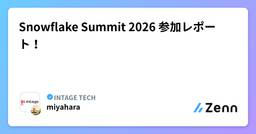

INTAGE TECHのフィード
https://zenn.dev/p/intage_tech
マーケティングリサーチ／インサイト事業、マーケティングソリューション事業を展開する株式会社インテージのエンジニアリングチームが発信するテックブログです。
フィード

Snowflake Summit 2026 参加レポート！
INTAGE TECHのフィード
こんにちは、データテクノロジー部の宮原です。6月1日から4日にかけて、サンフランシスコで開催された「Snowflake Summit 2026」に参加してきました！普段はデータエンジニアとして、INTAGE connect^{\text{®}}やPOS-is^{\text{®}}といったデータ提供業務やダッシュボード開発・運用を行っており、その基盤としてSnowflakeを活用しています。私にとっては今回がSummit初参加でしたが、世界中のデータプロフェッショナルが集まる空間で、これからの業務に直結する数多くの知見を得られました。本記事では、私が実際に現地で参加したセッションの...
1日前

【Snowflake Summit 2026】参加レポート — "Agentic Enterprise" を掲げた2つのキーノート
INTAGE TECHのフィード
こんにちは、インテージのパクと申します。サンフランシスコで開催された Snowflake Summit 2026 に参加してきました。2万人超が集まった今年のテーマは一言でいえば 「Agentic Enterprise（エージェント型企業）」。AI が 実験段階 から 実際のビジネス成果 のフェーズへ移ったことを、製品発表と顧客事例の両面から印象づける内容でした。本記事では、2 つのキーノートで示された今年の方向性についてまとめています。Snowflake を使っている、あるいは導入を検討しているデータエンジニア・基盤担当の方に、特に読んでいただきたい内容です。なお、筆者が聴講...
14日前
インテージデータで最強の新人研修を作ったら、新人満足度が100%を達成した話
INTAGE TECHのフィード
はじめにはじめまして。株式会社インテージの山﨑です。普段はデータサイエンティストとして、広告効果測定や構造化分析などのデータ分析の業務を行っています。本記事では、2026年4月に弊社へ入社された新人のみなさん向けに研修を実施しましたので、その報告と簡単に内容の紹介をさせていただきます。なお、研修は山﨑だけでなく、同じくデータサイエンティストの桝田さんも研修担当として参加しており、本記事も一部執筆に携わっております。桝田さんは過去にも記事を投稿しておりますので、よろしければご覧ください。https://zenn.dev/intage_tech/articles/art012...
23日前
統計モデルの育て方 ― MMMモデル更新の例を参考に
INTAGE TECHのフィード
はじめにはじめまして。株式会社インテージの森川です。普段は、MMMをはじめとした統計モデルを活用したお客様のデータ解析支援に従事しております。統計モデルを継続的に運用するなかでは、新たなデータの蓄積や市場環境の変化に合わせてモデルを定期的に更新（リフレッシュ）し、その鮮度を最新の状態に維持する必要があります。しかし、統計モデルの「更新の判断軸」や「プロセス」については、機械学習モデルの運用（MLOps）のような確立されたプロセスがなく、現場で頭を悩ませる方々も少なくはないのでしょうか。そこで本記事では、筆者の実務経験やOSSのドキュメントを参考に、統計モデルの更新プロセスや...
2ヶ月前
Cortex Codeを組織で活用する際のポイント
INTAGE TECHのフィード
はじめにこんにちは！インテージの児玉です。AIエージェントの技術進化が加速するなか、Snowflakeからも待望のAIエージェントとして 「Cortex Code」 が登場しました。Cortex Codeは、個人の開発体験を劇的に向上させますが、組織の開発フローに組み込む際には、以下の観点が重要になります。自律実行の安全性担保と実行プロセスの透明化エージェントへのドメイン知識や開発規律の反映本記事では、私自身が感じたCortex Codeを組織で活用する際のポイントを紹介します。!本記事で紹介する内容①：ガバナンス設計とコスト制御権限管理（RBAC）とリソ...
3ヶ月前
Google Cloud Next ’26 参加レポート
INTAGE TECHのフィード
こんにちは、データテクノロジー部の山村です。4/22〜4/24に米国ラスベガスで開催されたGoogle Cloud Next ’26に現地参加してきました！弊社からは私含む計2名での参加で、弊社として初めての参加となります。個人的に初めての海外出張 & 初アメリカ & 英語苦手...等など、安心材料を見つける方が大変でしたが、無事参加することができました。ここでは、個人的に気になったところを中心に参加レポートの形でまとめさせていただきます。 全体まとめ今回のイベントは「Agent」が主役となっていました。基調講演はもちろん、ブースを回っていても、個人的にはA...
3ヶ月前
データを見てみよう【統計学の利用禁止】
INTAGE TECHのフィード
はじめまして株式会社インテージの桝田です。いわゆるデータサイエンティストとして、普段は広告効果測定や時系列データ分析の業務を行っています。業務外では統計学・マーケティングサイエンスの研究活動も行っています。（牛の歩みですが） データ分析について考える時は2014年！ 一般社団法人データサイエンティスト協会は、データサイエンティストに求められるスキルセットとして「ビジネス力」「データエンジニアリング力」「データサイエンス力」の三つを定義しました。それから現在、10年以上が経過しました。AIの台頭など我々を取り巻く環境は大きく変化したものの、これら三つのスキルが重要であると...
3ヶ月前
データモデリングの知見を広めるために輪読会からハンズオン研修まで企画・運営した過程と成果
INTAGE TECHのフィード
本記事の3行サマリ勉強会トピック選定の戦略：重要×非緊急、かつ組織課題と技術トレンドを紐付けてトピック選定。知識定着のための仕掛け：輪読会（知識習得）からハンズオン（実践）へ段階的に移行。予習復習会や振り返り会も導入して知識の定着をフォロー。1年後の成果：社内ナレッジページ投稿数が2記事から15記事へ急増。参加者も実務への活用実感や技術の面白さを体感。 はじめにこんにちは。株式会社インテージの石渡です。多くの方が年度初めを迎える4月。新入社員を迎える、新しいプロジェクトが始まる、異動先で全く新しい業務を始める、などで新たな知識の普及やキャッチアップが必要になる...
3ヶ月前
技術トレンドを「組織の共通言語」に。技術動向を浸透・定着させる実践アプローチ
INTAGE TECHのフィード
はじめに生成AIを筆頭として、テクノロジーの進化するスピードは日に日に加速しています。こうした最新の技術動向のキャッチアップは、各個人の裁量に委ねられるケースも多いのではないでしょうか。しかし、「個」に閉じた情報収集は、メンバー間での情報感度にバラつきを生むだけではなく、個人の有益な知見が組織の資産として蓄積・活用されづらいという側面があります。とはいえ、日々の業務の中で、自身の専門領域や関心領域を超えて、広範な情報を追い続けることは、決して簡単ではありません。だからこそ、最新の技術トレンドを「個人の知識」で終わらせず、組織の「共通言語」として浸透・定着させるためには、"情...
4ヶ月前
LLM×RAGで始める商品名寄せ：コールドスタート解決と品質評価の導入
INTAGE TECHのフィード
LLM×RAGで始める商品名寄せ：コールドスタート解決と品質評価の導入 1. 導入：商品マスター名寄せの課題流通業界では、メーカー・卸・小売といったプレイヤーが独自の形式で商品データを管理しており、データを横断的に集計・分析する際には商品同士を紐付ける必要があります。インテージでは、長年にわたり整備してきた商品マスターを保有しています。商品マスターにはJAN（GTIN）数で約110万件の商品が整備され、メーカー・カテゴリ・容量などの属性も正確に紐付いており、これらを基準に多くの商品を紐づけて分析することができます。一方で、実務においては統一コードが付与されていないデータも...
5ヶ月前
SnowflakeのAI機能でpdfの内容を要約する
INTAGE TECHのフィード
はじめにはじめまして、株式会社インテージの山村(@yyamamura)です。弊社では、社内には様々な情報がPDFで蓄積されています。最近これらをSnowflakeに取り込み、使いやすい形で蓄積することを検討しております。例えば、pdfの内容をあらかじめ要約しておいて、参照しやすいような形でデータベース化すること等が候補として挙がっており、せっかくならばSnowflakeで全ての処理を完結したいということで、SnowflakeのAI機能を使ってPDFの内容を要約する方法について検証しました。検証にあたっては、SnowflakeのAI_Extract関数と、AI_PARSE_DO...
5ヶ月前
TableauでMMMの効果×効率バブルチャートに時間推移の要素を追加する
INTAGE TECHのフィード
作成するチャートの完成サンプルX軸: 貢献効果、Y軸: ROI、バブルの大きさ: 出稿金額 MMMで求められる結果の可視化についてはじめまして。株式会社インテージの石渡です。最近のメイン業務は大規模データ分析ですが、マーケティング・ミックス・モデリング(以下、MMM)や構造化分析といった統計的データ解析も一部手掛けていました。本記事では、継続的なデータ更新が必要なMMMにおける結果の可視化について、Tableauを用いたサンプルデータでのデモを紹介します。基本概念の紹介は割愛するため、気になる方は弊社児玉が書いた以下の記事を参考にしてください。https://zen...
6ヶ月前
MMM入門：基本概念と主要OSS比較
INTAGE TECHのフィード
はじめにはじめまして。株式会社インテージの児玉です。普段は、お客様のデータ解析支援や社内におけるクラウド活用推進に従事しております。本記事では、昨今注目を集めているMMM（マーケティングミックスモデリング）の概要と主要なOSSを紹介します。まずMMMの基本的な考え方を解説した上で、代表的なOSSであるGoogle Meridian[1]Meta Robyn[2]PyMC Labs PyMC-Marketing[3]の3点を、「技術的特徴」と「実務上の勘所」の両面から比較・整理します。私自身が実業務で扱っていない項目も含めて、フラットな目線で各種OSS...
6ヶ月前
生成AI時代のデータ活用最前線！ML女子部Meetup 2025参加レポート
INTAGE TECHのフィード
はじめまして。インテージの王と申します。2025年11月14日、Google渋谷オフィスにて開催されたML女子部に参加しました。今回は、「生成AI × データ分析・活用 Meetup 2025」というテーマで、最前線で活躍されている超豪華な3名のゲストが登壇し、生成AI時代のデータ活用について現場のリアルと未来のヒントを語ってくださいました。本記事では、各セッションの内容を振り返りながら、特に印象的だった内容をご紹介します。 イベントconnpassページhttps://women-ml.connpass.com/event/366580/ 登壇者マスクド・アナライズ...
6ヶ月前
TechFes 2025 開催レポート
INTAGE TECHのフィード
少し時間が経ちましたが、2025年10月に開催した社内技術イベント「TechFes 2025」の様子を改めてご紹介したいと思います。2025年10月2日・3日の2日間、インテージ社内で開催された技術イベント「TechFes2025」では、生成AI共有会、技術展示会、そして第三回TechAcademyの3つのプログラムを実施しました。本稿では、そこから生まれた多くの気づきと刺激があった2日間を総括します。 イベントconnpassページhttps://itgtechacademy.connpass.com/event/367187/ 🤖 生成AI共有会初日の生成AI共有...
6ヶ月前
Tech Fes 2025 ～TechAcademy編～
INTAGE TECHのフィード
すかいらーく・リクルートが語る、事業を加速させるデータ活用の最前線ー第三回インテージTechAcademyインテージが2025年10月3日（金）に開催された、第三回TechAcademyの内容を紹介します。 📝概要今回のTechAcademyでは、株式会社インテージ、すかいらーくホールディングス、リクルートの3社が登壇し、AI・クラウド・BIを活用して「現場が自走する」データ活用をいかに設計・運用しているかを紹介しました。後半のパネルディスカッションでは、「VUCA時代のキャリアの歩み方」をテーマに、変化の時代に学び続け、越境しながら成長するためのヒントを語り合いました。...
6ヶ月前
TechFes 2025 ～生成AI共有会編～
INTAGE TECHのフィード
はじめにはじめまして。インテージの小林と申します。普段はフルスタックエンジニア・AIエンジニアとして活動しております。本記事ではインテージの技術イベント「TechFes」で開催された生成AI共有会の様子についてお届けしたいと思います。この生成AI共有会では、各部署のメンバーが実際の業務の中で使用している生成AIの使い道・ナレッジについて共有してもらいました。 開催の背景インテージ社内では、すでにさまざまな場面で生成AIの活用が進んでいます。日常業務や調査・開発、業務改善の取り組みなど、多様な領域で試行と工夫が生まれています。一方で「どのように使われているのか」「実際...
6ヶ月前
TechFes 2025 ～技術展示会編～
INTAGE TECHのフィード
概要インテージ秋葉原ビルの9Fを貸し切り、社内にデジタル戦略本部のソリューションやプロダクトを紹介するブースとして出展しました。本部外メンバー向けにはデジタル戦略本部ソリューション・プロダクトへの認知の獲得や業務シナジー機会の提供、本部内メンバー向けには他部署事例を知り自身の業務に還元することを目的として開催されました。 当日の様子10/2(木) 15:00-19:00、10/3(金) 11:00-13:00の二日間で開催されました。デジタル戦略本部からは、すべての部署から計7ブースが出展しました。以下はその内訳です。データテクノロジー部Persona Finder...
6ヶ月前
ナレッジシェア文化を1年で定着させた話 - プロジェクト立ち上げから運用まで
INTAGE TECHのフィード
はじめに株式会社インテージのデジタル戦略本部に所属している林と申します。本記事では、私たちが約1年かけて「ナレッジシェア文化」を組織に定着させた過程をお伝えします。「ナレッジシェアを始めたいけど、どこから手をつければいいかわからない」「始めてみたものの、なかなか定着しない」という方に向けて、プロジェクトの立ち上げから現在の運用まで、具体的なステップと学びを共有します。 きっかけ：なぜナレッジシェアを始めたか デジタル戦略本部の発足2024年7月、組織再編によりデジタル戦略本部が発足しました。IT技術に精通したメンバーが同じ本部に集まったことで、ある会話が生まれました。...
6ヶ月前
AI Agent Summit '25 Fall 参加レポート
INTAGE TECHのフィード
AI Agent Summit とはAI Agent Summit は、Google が主催するAIエージェントのイベントです。Google がどのようなAIプロダクトを作っているか、そして最先端の企業がそれらをどのように活用しているかを、豊富な事例を通じて体験できる場でした。ビジネス向けの活用事例から、MCP / ADKといった開発者向けの内容まで、幅広いコンテンツが展開された2日間のイベントとなっておりました。本レポートでは、イベントに参加した弊社メンバーが基調講演と印象に残った講演を抜粋してまとめていきます。 基調講演今回の基調講演では、下記3つのテーマをメインと...
7ヶ月前